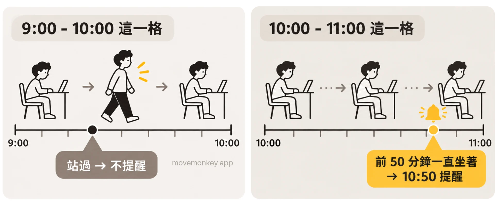

Apple Watch 站立提醒可以改成半小時嗎？想每 30 分鐘提醒一次怎麼辦
以下依 Apple 的說明、iOS 27 的設定畫面和我們在手錶上的實測，說明蘋果手錶（Apple Watch）的站立提醒可不可以改成半小時，以及想每 30 分鐘被提醒一次，有哪些方法。
Apple Watch 站立提醒可以改成半小時嗎？
不能。站立提醒只有一個開關，沒有間隔可選，也不能設定時段。
Apple Watch 依整點一小時一小時地算站立：一小時裡站起來並活動至少 1 分鐘，這一小時就算站過，記為 1 個站立小時。[1]站立目標是一天要有幾個站立小時，可以設為 6 到 16 小時。[2]站立提醒是在這一小時還沒站過時，到第 50 分鐘提醒你。[3]

因為依整點計算，最長可能要連續坐 1 小時 49 分鐘，才會收到提醒，見 Apple Watch 內建的站立提醒，能做什麼，不能做什麼。
Apple Watch App 的「活動記錄」設定裡，站立提醒旁邊還有「每日指導」、「進度更新」、「目標完成」等幾項。[4]其中只有「進度更新」能選間隔，可選每 2、4、6、8 小時。但它報告的是活動記錄圓圈的進度，不是站立提醒。
網路上有些回答說，可以在「提醒時間」裡把站立提醒改成 30 分鐘。iOS 27 的設定裡沒有這一項。
想讓 Apple Watch 每 30 分鐘提醒一次，有哪些方法？
用 Apple Watch 內建的功能，設定最簡單的是「響鈴」：一個開關，就能每 30 分鐘播放一次聲音和觸覺回饋，但間隔只有每小時、每 30 分鐘、每 15 分鐘三種，也不管你有沒有站起來；其他內建的方法，大多要一個時間點設一個。想坐滿 30 分鐘才提醒、站起來就重新計時，可以用久坐提醒 App MoveMonkey。
| 讓 Apple Watch 每 30 分鐘提醒的方法 | 9:00 到 18:00 要設幾個 | 站起來後 |
|---|---|---|
| 響鈴（輔助使用） | 1 個開關 | 不會，時間到了就提醒 |
| 正念提醒 | 19 個 | 不會 |
| 捷徑自動化 | 1 個捷徑，加入 19 個時間 | 不會 |
| 鬧鐘 | 19 個，每次都要手動關掉 | 不會 |
| 提醒事項 | 2 個（整點和半點各一個，每小時重複） | 不會 |
| 計時器 | 每次響後手動重新開始 | 不會，要手動重新開始 |
| 久坐提醒 App MoveMonkey | 1 個設定：久坐時間選 30 分鐘 | 會，走動或站立後自動重新計時 |
方法一：響鈴（一個開關，間隔只有三種）
- 在 Apple Watch 上前往「設定」App，點一下「輔助使用」，然後點一下「響鈴」。
- 開啟「響鈴」，在「排程」中選擇「30 分鐘」。
- 在「聲音」中選擇「鈴聲」或「鳥」。
也可以在 iPhone 上前往 Apple Watch App，點一下「我的手錶」，點一下「輔助使用」，然後點一下「響鈴」。Apple 的說明：「當提示音開啟時，Apple Watch 會在規定的時間間隔播放所選的聲音和觸覺回饋。」[5]
不過，「響鈴」本來是用來報時的：它依鐘點播放，也沒有時段可設定。2026 年 10 月，我們在 watchOS 27.0.1 上測試：手錶開啟靜音模式時，響鈴只輕點手腕、不出聲；開啟勿擾模式時，既不出聲，也不輕點。手錶的靜音模式要在手錶上單獨開啟，iPhone 靜音不管用。
方法二：正念提醒（一個時間點一個）
- 在 iPhone 上前往 Apple Watch App，點一下「我的手錶」。
- 捲動到最下方，點一下「App」，然後點一下「正念」。
- 在「提醒事項」下方點一下「加入提醒事項」，設定一個時間。
- 每隔 30 分鐘再加入一個，例如 9:00、9:30、10:00⋯⋯
Apple 的說明是，可以在「提醒事項」下方開啟「一天開始」和「當天結束」，或「點一下『加入提醒事項』來製作其他提醒事項」。[6]每個提醒只對應一個時間點，9:00 到 18:00 每半小時一個，要加入 19 個。我們在 watchOS 27.0.1 上一個一個加到 20 個，都加得進去。
方法三：捷徑自動化（一個捷徑，加入多個時間）
- 在 iPhone 上打開「捷徑」App，新增一個捷徑，加入「顯示通知」動作。
- 點一下「編輯」，然後點一下「自動化」，選擇「特定時間」，設定一個時間，例如 9:00。
- 用同樣的方法再加入 9:30、10:00⋯⋯
- 點一下「編輯」，點一下「資訊」按鈕，再點一下「隱私權」，開啟「鎖定時允許執行」。不開啟的話，每次時間到了，iPhone 會先問你要不要執行。
iOS 27 的「捷徑」裡，Apple 的說明是：「自動化操作現已直接內建於捷徑，包括你分享的捷徑。」[7]2026 年 10 月，我們在 iOS 27 上實測：同一個捷徑可以加入好幾個「特定時間」。9:00 到 18:00 每半小時一個，要加入 19 個時間。通知從 iPhone 發出：iPhone 鎖定時會顯示在 Apple Watch 上，正在用 iPhone 時只顯示在 iPhone 上。[8]
方法四：鬧鐘（一個時間點一個）
在 Apple Watch 的「鬧鐘」App 裡，每個鬧鐘只能選在星期幾重複，[9]每半小時就要一個鬧鐘，每次響了都要手動關掉。想只輕點手腕、不發出聲音，Apple 的說明是：「若要製作輕點手腕但不發出聲響的鬧鐘，請開啟『靜音模式』。」[9]
方法五：提醒事項（兩個，每小時重複）
iPhone 上的「提醒事項」App 最短只能每小時重複，沒有依分鐘重複的選項。[10]可以設兩個，一個在整點、一個在半點，都選擇「每小時」重複。
方法六：計時器（每次手動重新開始）
在 Apple Watch 的「計時器」App 裡設 30 分鐘。Apple 的說明：「當計時器停止時，你可以點一下『重複計時器』按鈕來開始相同的計時時間。」[11]它是唯一一個從你開始計時算起的方法，但每次都要手動點一下這個按鈕，不會自動重複。
方法七：久坐提醒 App MoveMonkey（坐滿 30 分鐘才提醒）
- 在 iPhone 上安裝久坐提醒 App MoveMonkey（即將在 App Store 推出）。
- 第一次打開時，把「久坐時間」設為 30 分鐘。之後想改，可以點一下首頁左上角的齒輪，進入「設定」。
它從你上次起身開始計時：走動或站立後會自動重新計時，坐滿 30 分鐘才提醒。久坐時間可以選 30、45、60 或 90 分鐘。
照著教學設了 Apple Watch 正念提醒，為什麼沒有提醒？
先看兩個設定：「正念」裡是不是開啟了「今天不再通知」，正念的通知是不是設成了「傳送到通知中心」。
開啟「今天不再通知」，當天剩下的正念提醒都不會再來。[6]正念的通知設成「傳送到通知中心」時，通知只進通知中心，Apple Watch 不會發出提醒。[8]改回來的方法：在 iPhone 上前往 Apple Watch App，點一下「我的手錶」，點一下「通知」，然後點一下「正念」，選擇「允許通知」。
正念提醒本身是能用的：2026 年 10 月，我們在 watchOS 27.0.1 上加了一個 2 分鐘後的提醒，時間到了就收到了。另有使用者反映，換了新手錶後要先手動打開一次「正念」App、允許通知，提醒才會來。[12]
響鈴、正念提醒這些方法和 Apple Watch 站立提醒有什麼不同？
上面這些內建的方法都只依時間提醒，不管你剛剛是不是站起來過。
Apple 對響鈴、正念、捷徑、鬧鐘、提醒事項和計時器的說明，都只依時間或間隔來寫，沒有一個提到會看你有沒有站起來。[5][6][7][9][10][11]例如 9:25 剛起身倒了杯水，9:30 照樣會提醒。站立提醒會看你這一小時有沒有站過，但只依整點計算。

久坐提醒 App · 即將在 App Store 推出
MoveMonkey：從上次起身開始算的久坐提醒
從你上次起身開始，坐滿你設定的時間（30、45、60 或 90 分鐘），小猴子才會提醒你。適用於 iPhone 和 Apple Watch，只用 iPhone 也可以；走動或站立後自動重新計時。
早上等你起身後才開始計時，午休可以設為不提醒，提醒時段也由你設定。
點一下「起身動動」，只要走上 1 分鐘，小猴子還會為你喝采。
核心功能永久免費，沒有廣告。
看更詳細的介紹 →